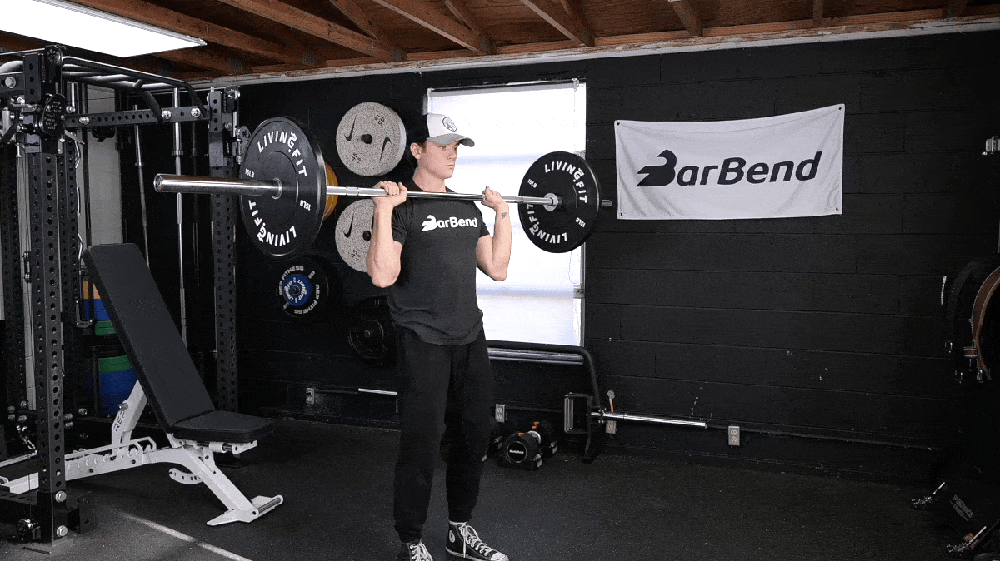
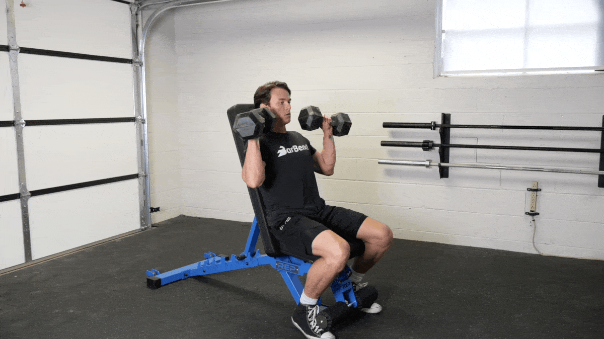
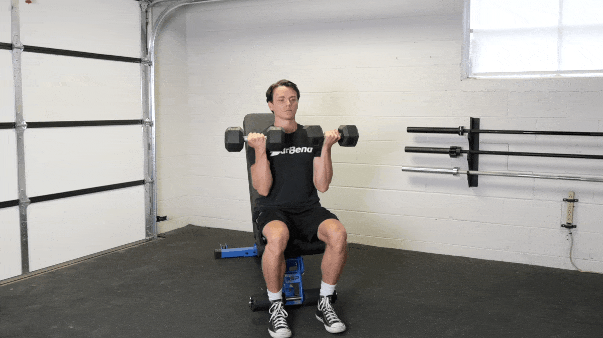
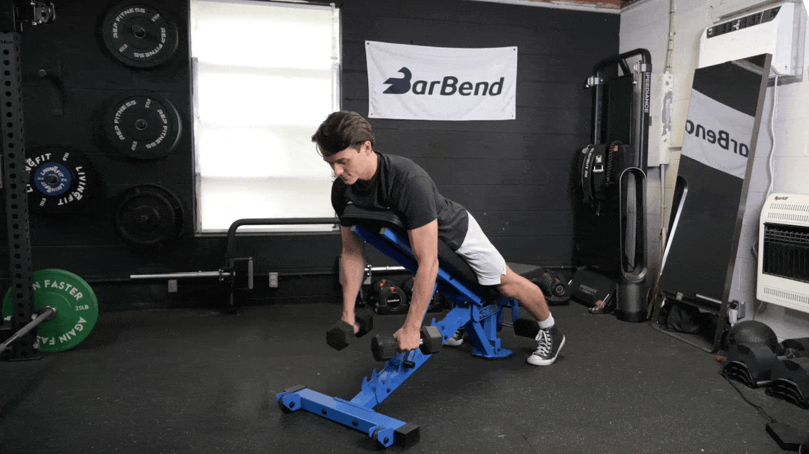
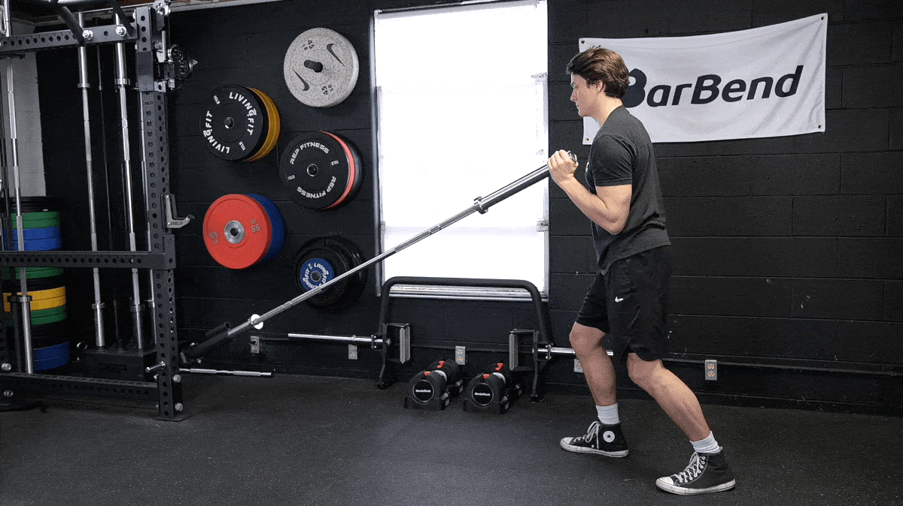

Muscles Targeted: Anterior deltoids (front shoulder muscles), with secondary involvement of the lateral deltoids and upper chest muscles.
Equipment Needed: Dumbbells.
Description:
The dumbbell front raise is a fundamental exercise for targeting the front deltoids, helping to build strength and definition in the front of the shoulders. It's a simple yet effective movement that isolates the shoulder muscles.
Steps:
Starting Position: Stand with your feet shoulder-width apart, holding a dumbbell in each hand with your palms facing your thighs. Keep a slight bend in your elbows.
Lift the Weights: Engage your core for stability and keep your back straight. Exhale and slowly lift the dumbbells in front of you, leading with your elbows. Keep your arms straight but not locked.
Control the Movement: Lift the dumbbells until they reach shoulder height or slightly above, but avoid going higher than shoulder level to prevent strain on the shoulder joint.
Lower the Weights: Inhale and slowly lower the dumbbells back to the starting position, maintaining control throughout the movement. Keep the motion smooth and controlled, resisting the urge to swing the weights.
Repeat: Aim for 3 sets of 10-15 repetitions, depending on your strength and fitness level. Start with lighter weights to master the form before progressing to heavier weights.
Tips:
Focus on keeping your shoulders relaxed and avoid shrugging them up toward your ears.
Maintain a slight bend in your elbows throughout the movement to reduce strain on the joints.
Keep the movement slow and controlled, focusing on the contraction of the shoulder muscles.
Avoid using momentum to lift the weights; instead, rely on the strength of your shoulder muscles.
Variations:
Single-Arm Front Raise: Perform the exercise one arm at a time to focus on each shoulder independently.
Plate Front Raise: Instead of dumbbells, use weight plates for a different grip and challenge.
Cable Front Raise: Perform the exercise using a cable machine for constant tension on the muscles throughout the movement.
Incorporate the dumbbell front raise into your shoulder workout routine to develop strength and definition in your front deltoids, helping to create a balanced and well-rounded physique. As always, prioritize proper form and technique to maximize the effectiveness of the exercise and minimize the risk of injury.
Barbell Overhead Press

Muscles Targeted: Primary emphasis on the anterior deltoids (front shoulder muscles), with secondary involvement of the lateral deltoids, triceps, and upper chest muscles.
Equipment Needed: Barbell, weight plates, and a squat rack or power rack.
Description:
The barbell overhead press, also known as the shoulder press or military press, is a compound exercise that targets the entire shoulder complex along with the triceps and upper chest. It's a key movement for building upper body strength and muscle mass.
Steps:
Starting Position: Stand with your feet shoulder-width apart, gripping the barbell with an overhand grip (palms facing forward). The bar should be resting on the front of your shoulders with your elbows slightly in front of the bar.
Press the Bar: Inhale and brace your core. Press the barbell overhead by extending your arms, keeping your head in a neutral position and pushing your head slightly forward to clear the bar. Fully extend your arms without locking out your elbows.
Lockout: Once the barbell is overhead, pause briefly at the top, ensuring full extension of the arms and engagement of the shoulder muscles.
Lower the Bar: Exhale and slowly lower the barbell back to the starting position, maintaining control throughout the movement. Keep your core tight and avoid arching your back excessively.
Repeat: Aim for 3 sets of 8-12 repetitions, depending on your strength and fitness level. Increase the weight gradually as you progress.
Tips:
Keep your core tight throughout the movement to stabilize your body and protect your lower back.
Avoid leaning back excessively as you press the barbell overhead; maintain a slight bend in your knees and keep your torso upright.
Use a full range of motion, lowering the barbell until it touches your upper chest or collarbone before pressing it overhead.
Engage your glutes and quads for additional stability and power during the lift.
Incorporate the barbell overhead press into your shoulder workout routine to build strength and size in your shoulders, triceps, and upper chest. Focus on proper form and technique to maximize the effectiveness of the exercise and minimize the risk of injury.
Dumbbell Shoulder Press

Muscles Targeted: Primary emphasis on the anterior deltoids (front shoulder muscles), with secondary involvement of the lateral deltoids, triceps, and upper chest muscles.
Equipment Needed: Pair of dumbbells.
Description:
The dumbbell shoulder press is a compound exercise that targets the entire shoulder complex along with the triceps and upper chest. It's an effective movement for building upper body strength and muscle mass while also improving shoulder stability.
Steps:
Starting Position: Sit on a bench with back support or stand with your feet shoulder-width apart. Hold a dumbbell in each hand at shoulder height with your palms facing forward and elbows bent.
Press the Weights: Exhale and press the dumbbells overhead by extending your arms upward. Keep your core engaged and maintain a slight bend in your knees to stabilize your body.
Lockout: Once the dumbbells are overhead, pause briefly at the top, ensuring full extension of the arms and engagement of the shoulder muscles.
Lower the Weights: Inhale and slowly lower the dumbbells back to the starting position, maintaining control throughout the movement. Keep your core tight and avoid arching your back excessively.
Repeat: Aim for 3 sets of 8-12 repetitions, depending on your strength and fitness level. Increase the weight gradually as you progress.
Tips:
Keep your core tight throughout the movement to stabilize your body and protect your lower back.
Avoid arching your back excessively as you press the dumbbells overhead; maintain a neutral spine position.
Use a full range of motion, lowering the dumbbells until your elbows are slightly below shoulder level before pressing them overhead.
Engage your glutes and quads for additional stability and power during the lift.
Incorporate the dumbbell shoulder press into your shoulder workout routine to build strength and size in your shoulders, triceps, and upper chest. Focus on proper form and technique to maximize the effectiveness of the exercise and minimize the risk of injury.
Arnold Press

Muscles Targeted: Primary emphasis on the anterior deltoids (front shoulder muscles), with secondary involvement of the lateral deltoids, triceps, and upper chest muscles.
Equipment Needed: Pair of dumbbells.
Description:
The Arnold press is a variation of the traditional shoulder press that was popularized by bodybuilding legend Arnold Schwarzenegger. It targets the front and side deltoids, providing a complete shoulder workout while also engaging the triceps and upper chest.
Steps:
Starting Position: Sit on a bench with back support or stand with your feet shoulder-width apart. Hold a dumbbell in each hand at shoulder height with your palms facing your body and elbows bent.
Rotate and Press: Exhale and simultaneously rotate your palms outward and press the dumbbells overhead in a smooth, circular motion. Fully extend your arms without locking out your elbows.
Lockout: Once the dumbbells are overhead, pause briefly at the top, ensuring full extension of the arms and engagement of the shoulder muscles.
Reverse Rotation and Lower: Inhale and reverse the motion by rotating your palms inward as you lower the dumbbells back to the starting position. Keep your core tight and maintain control throughout the movement.
Repeat: Aim for 3 sets of 8-12 repetitions, depending on your strength and fitness level. Increase the weight gradually as you progress.
Tips:
Keep your core tight throughout the movement to stabilize your body and protect your lower back.
Control the motion and avoid swinging or using momentum to lift the dumbbells.
Engage your glutes and quads for additional stability and power during the lift.
Adjust the angle of your elbows and the range of motion based on your comfort and shoulder mobility.
Incorporate the Arnold press into your shoulder workout routine to target both the front and side deltoids, helping to build strength and size in your shoulders while improving overall shoulder stability. Focus on proper form and technique to maximize the effectiveness of the exercise and minimize the risk of injury.
Y-Raise

Muscles Targeted: Primary emphasis on the posterior deltoids (rear shoulder muscles), with secondary involvement of the lateral deltoids, upper traps, and rhomboids.
Equipment Needed: Pair of dumbbells.
Description:
The Y-raise is an isolation exercise that targets the rear deltoids, helping to strengthen and develop the often neglected posterior shoulder muscles. It also engages the upper traps and rhomboids, contributing to improved shoulder stability and posture.
Steps:
Starting Position: Stand with your feet hip-width apart, holding a dumbbell in each hand with your arms extended downward and palms facing your body.
Raise the Weights: Exhale and lift the dumbbells upward and outward in a Y-shaped motion, leading with your elbows. Keep your arms straight but not locked and maintain a slight bend in your elbows throughout the movement.
Contract the Muscles: At the top of the movement, squeeze your shoulder blades together and pause briefly to maximize the contraction of the rear deltoids.
Lower the Weights: Inhale and slowly lower the dumbbells back to the starting position, maintaining control and resisting the urge to swing the weights.
Repeat: Aim for 3 sets of 10-15 repetitions, depending on your strength and fitness level. Start with lighter weights to master the form before progressing to heavier weights.
Tips:
Keep your core engaged and maintain a neutral spine throughout the movement to avoid excessive arching or rounding of the back.
Focus on using the rear deltoids to lift the dumbbells rather than relying on momentum or other muscle groups.
Control the descent of the dumbbells to maximize the time under tension and enhance muscle growth.
Adjust the range of motion based on your comfort and shoulder flexibility, but avoid lifting the dumbbells too high to prevent strain on the shoulder joint.
Incorporate the Y-raise into your shoulder workout routine to target and strengthen the rear deltoids, improving shoulder aesthetics and overall shoulder health. Focus on proper form and technique to maximize the effectiveness of the exercise and minimize the risk of injury.
Landmine Press

Muscles Targeted: Primary emphasis on the anterior deltoids (front shoulder muscles), with secondary involvement of the lateral deltoids, triceps, and upper chest muscles.
Equipment Needed: Landmine attachment, barbell, and weight plates.
Description:
The Landmine press is a versatile exercise that targets the front deltoids while also engaging the triceps and upper chest. It's an excellent alternative to traditional shoulder presses, offering a different range of motion and stability challenge.
Steps:
Setup: Position a barbell in a landmine attachment or securely anchor one end of the barbell in a corner. Load weight plates onto the other end of the barbell.
Starting Position: Stand facing the landmine with your feet shoulder-width apart. Grasp the end of the barbell with one hand and position it at shoulder height with your elbow bent.
Press the Bar: Exhale and press the barbell upward and away from your body in a controlled motion, extending your arm fully without locking out the elbow.
Lockout: Once the arm is fully extended, pause briefly at the top, ensuring full engagement of the shoulder muscles.
Lower the Bar: Inhale and slowly lower the barbell back to the starting position, maintaining control throughout the movement.
Repeat: Aim for 3 sets of 8-12 repetitions per arm, alternating between arms for each set.
Tips:
Keep your core engaged and maintain a stable stance throughout the movement to avoid excessive swaying or leaning.
Control the descent of the barbell to maximize the time under tension and enhance muscle growth.
Focus on pressing the barbell with the shoulder muscles rather than relying solely on the arm strength.
Adjust the weight according to your strength and fitness level, ensuring proper form and technique are maintained.
Incorporate the Landmine press into your shoulder workout routine to target the front deltoids and build strength and size in your shoulders, triceps, and upper chest. Focus on proper form and technique to maximize the effectiveness of the exercise and minimize the risk of injury.